Optimization is a fancy word for "finding the best way." We can see how it works if we take a closer look at drinking tea.
There is a best temperature for tea. If your tea is too hot, it will scald your tongue and you won't be able to taste anything for three days. If it’s lukewarm, it’s entirely unsatisfying. There is a sweet spot in the middle where it is comfortably hot, warming you from the inside out all the way down your throat and radiating through your belly. This is the ideal temperature for tea.
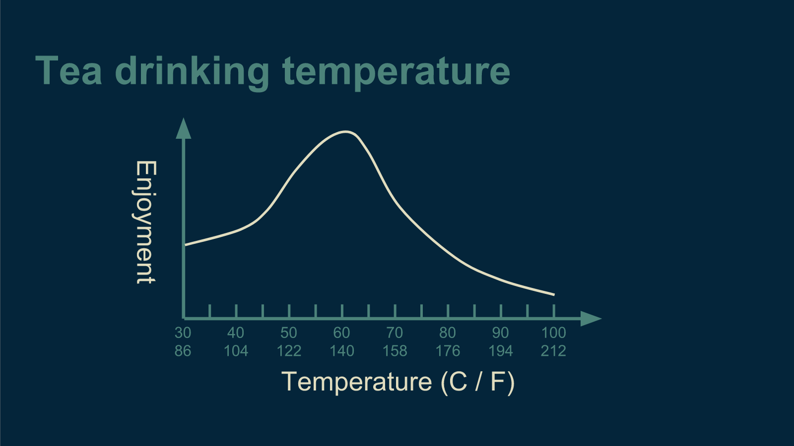This happy medium is what we try to find in optimization. That’s what Goldilocks was looking for when she tried Papa Bear's bed and found it too hard, tried mama bear's bed and found it too soft, then tried baby bear's bed and found it to be just right.
Finding how to get things just right turns out to be a very common problem. Mathematicians and computer scientist love it because it’s very specific and well formulated. You know when you’ve got it right, and you can compare your solution against others to see who got it right faster.
When a computer scientist tries to find the right temperature for tea, the first thing they do is flip the problem upside down. Instead of trying to maximize tea drinking enjoyment, they try to minimize suffering while drinking tea. The result is the same, and the math works out in the same way. It's not that all computer scientists are pessimists, it's just that most optimization problems are naturally described in terms of costs - money, time, resources - rather than benefits. In math it's convenient to make all your problems look the same before you work out a solution, so that you can just solve it the one time.
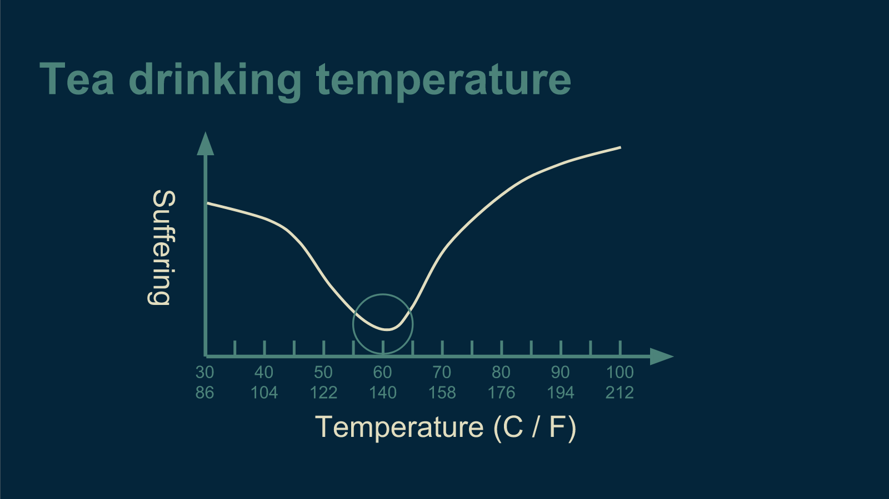In machine learning, this cost is often called an error function, because error is the undesirable thing, the suffering, that is being minimized. It can also be called a cost function, a loss function, or an energy function. They all mean pretty much the same thing.
Exhaustive search
There are a handful of ways to go about finding the best temperature for serving tea. The most obvious is just to look at the curve and pick the lowest point. Unfortunately, we don't actually know what the curve is when we start out. That is implicit in the optimization problem.
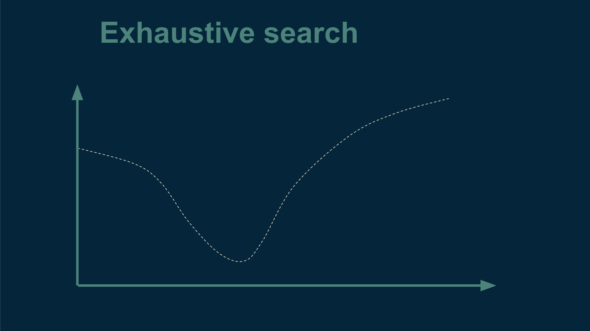But we can make use of our original idea and just measure the curve. We can prepare a cup of tea at a given temperature, serve it, and ask our unwitting test subject how they enjoyed it. Then we can repeat this process for every temperature across the whole range we care about. By the time we're done with this, we do know what the whole curve looks like, and then we can just pick temperature for which our tea drinker reported the most enjoyment, that is, the least suffering.
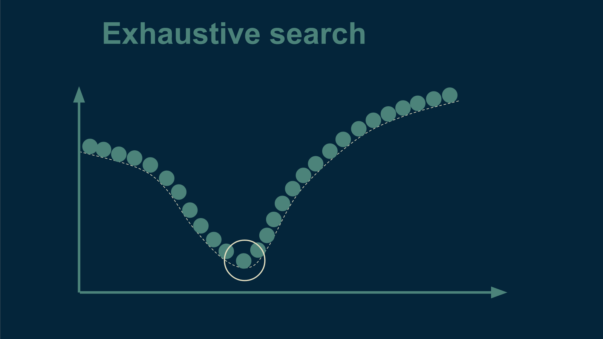This way of finding the best tea temperature is called exhaustive search. It is straightforward and effective, but may take a while. If our time is limited, it's worth it to check out a few other methods.
Gradient descent
If you imagine that our tea-suffering curve is actually a physical bowl, then we could easily find the bottom by dropping a marble in and letting it roll until it stops. This is the intuition behind gradient descent - literally "going downhill".
To use gradient descent we start at an arbitrary temperature. Before beginning, we don't know anything about our curve, so we make a random guess. We brew a cup of tea at that temperature and see how well our tea drinker likes it.
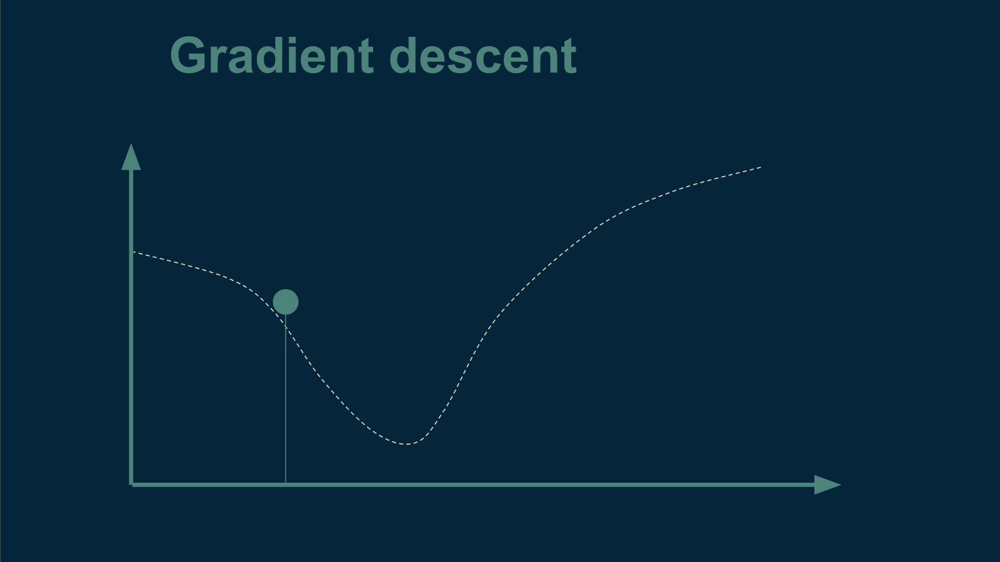From there, the next trick is to figure out which direction is downhill and which is up. To figure this out, we choose a direction, and choose a new temperature a very small distance away. Let's say we choose a temperature to the left. Then we brew up another cup of tea at this slightly cooler temperature and see whether or not it is better than the first. We discover that it is actually inferior. Now we know that "downhill" is to the right - that we need to make our next cup warmer to make it better.
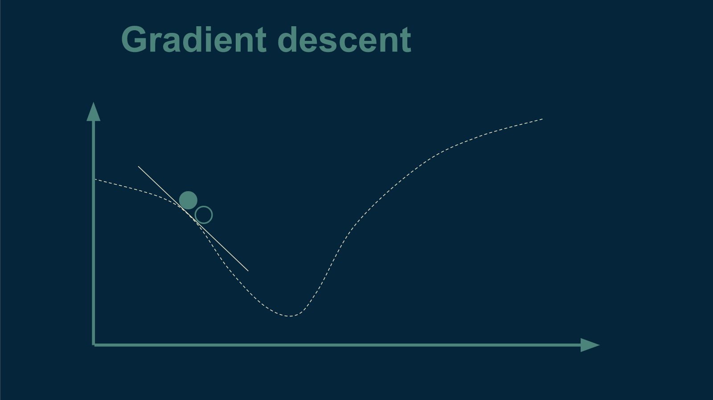We take a larger step in the direction of warmer tea, brew up a new cup, and start the process over again.
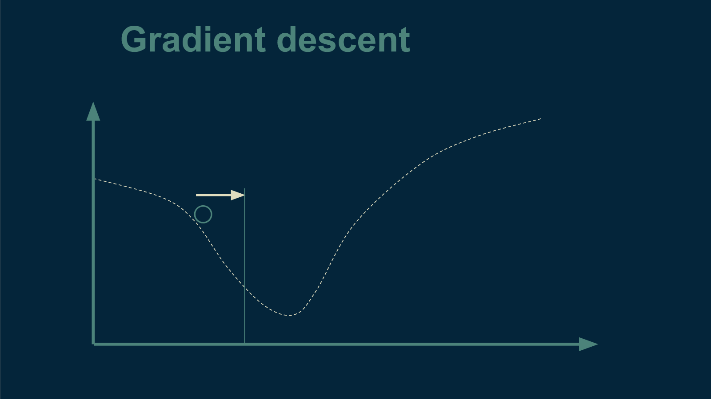We repeat this until we get to the very best temperature for tea.
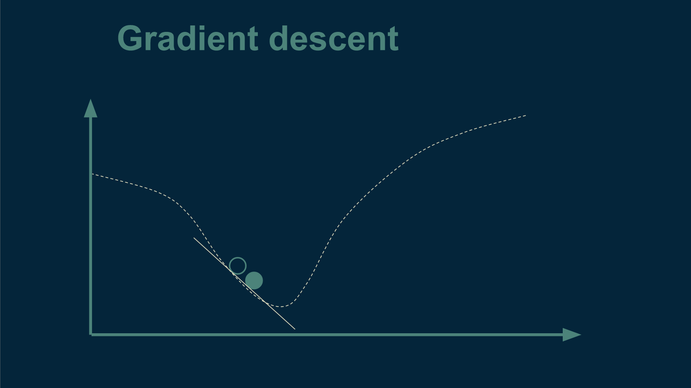The steeper the slope, the larger the step we can take. The shallower the slope, the smaller the step.
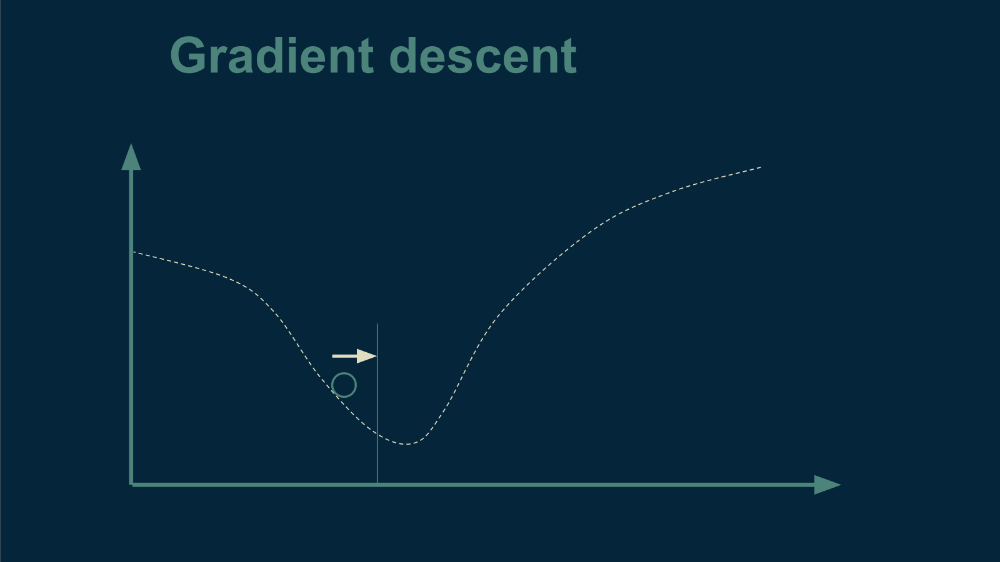We will know we are all done when we take a small step away and get the exact same level of enjoyment from our tea drinker. This can only happen at the bottom of the bowl, where it is flat and there is no downhill.
There are lots of gradient descent methods. Most of them are clever ways to measure the slope as efficiently as possible and to get to the bottom of the bowl in as few steps as possible - to brew as few cups of tea as we can get away with. They use different tricks to avoid completely calculating the slope or to choose a step size that is as large as can be gotten away with, but the underlying intuition is the same.
Including curvature
One of the tricks to find the bottom in the bowl in fewer steps is to use not just slope, but also curvature, when deciding how big of a step to take. As the marble starts to roll down the side of the bowl, is the slope getting steeper?
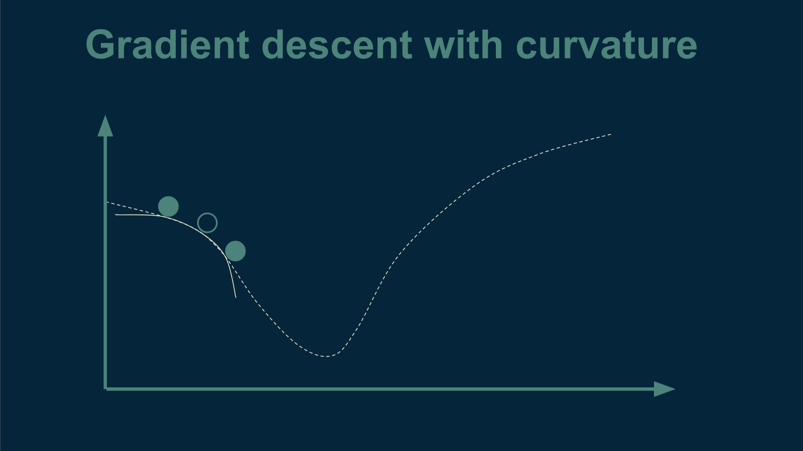If so, then the bottom is probably still far away. Take a big step.
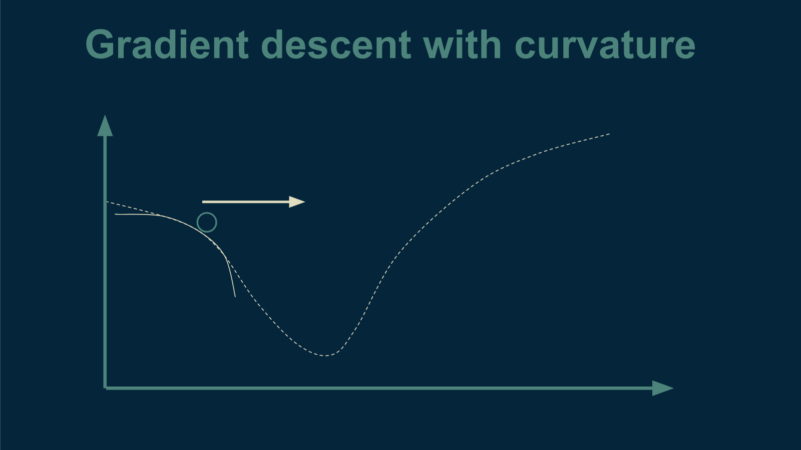Or is the slope getting shallower and starting to bottom out?
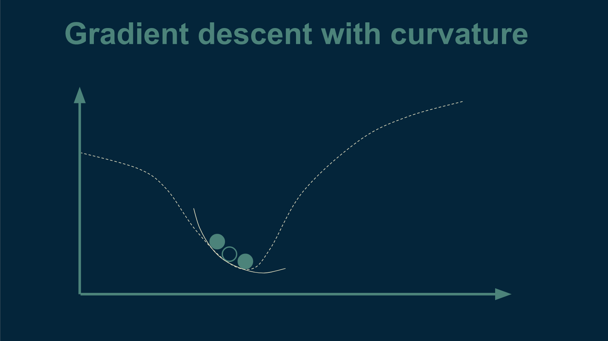If so, the bottom is probably getting closer. Take smaller steps now.
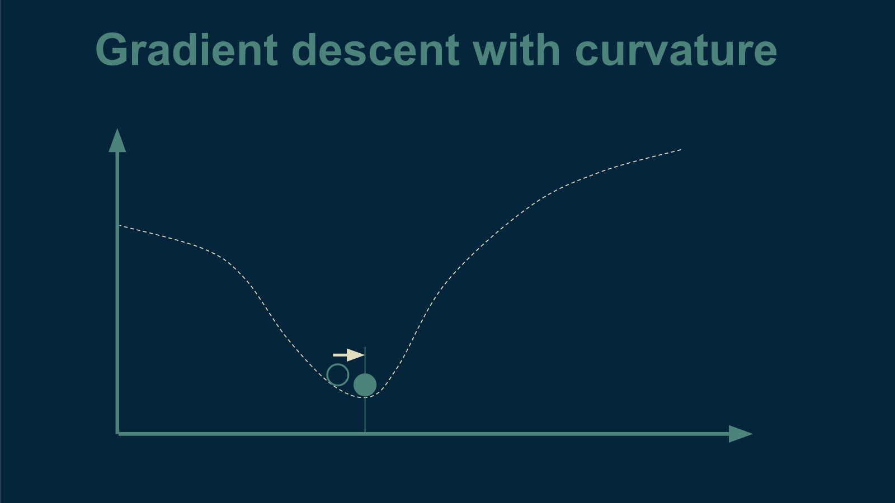Curvature, this slope-of-the-slope or Hessian, to give it its rightful name, can be very helpful if you are trying to take as few steps as possible, however it can also be much more expensive to compute. This is a trade-off that comes up a lot in optimization. We end up choosing between the number of steps we have to take and how hard it is to compute where the next step should be.
How gradient descent can break
Like a lot of math problems, the more assumptions you’re able to make, the better the solution you can come up with. Unfortunately, when working with real data, those assumptions don’t always apply.
There are a lot of ways that this drop-a-marble approach can fail. If there is more than one valley for a marble to roll into, we might miss the deepest one. Each of these little bowls is called a local minimum. We are interested in finding the global minimum, the deepest of all the bowls. Imagine that we are testing our tea temperatures on a hot day. It may be that once tea becomes cold enough, it makes a great iced tea, which is even more popular. We would never find that out by gradient descent alone.
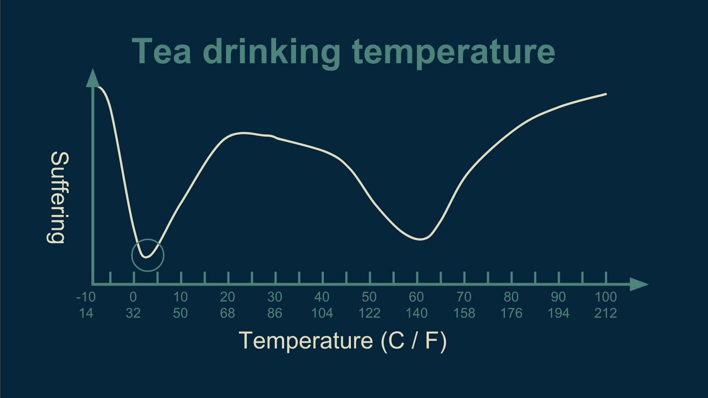If the error function is not smooth, there are lots of places a marble could get stuck. This could happen if our tea drinkers' enjoyment was heavily impacted by passing trains. The periodic occurrence of trains could introduce a wiggle into our data.
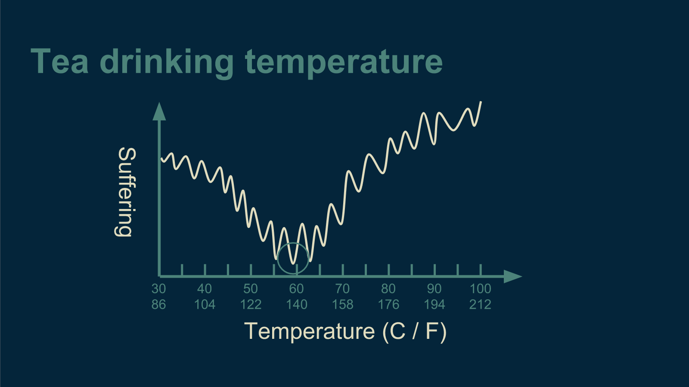If the error function you are trying to optimize makes discrete jumps, that presents a challenge. Marbles don't roll down stairs well. This could happen if our tea drinkers have to rate their enjoyment on a 10-point scale.
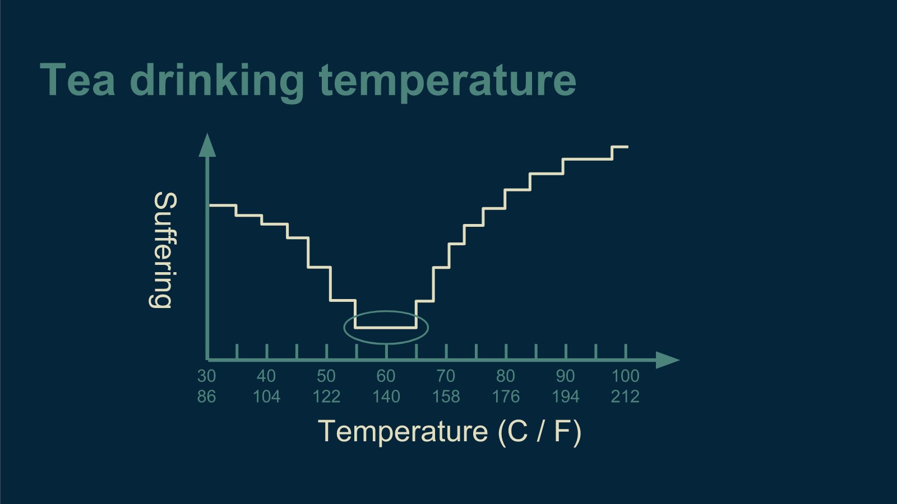If the error function is mostly a plateau, but has a bottom that is narrow and deep, then the marble is unlikely to find it. Perhaps our tea drinkers absolutely despise all tea that is anything but perfect.
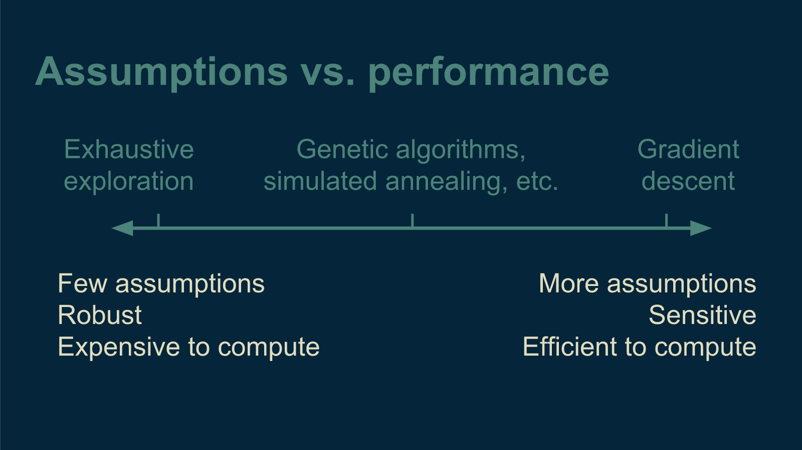All of these occur in real machine learning optimization problems.
Robust methods
If we suspect that our tea satisfaction curve has any of these tricky characteristics, we can always fall back to exhaustive search. Unfortunately, exhaustive search takes an extremely long time for a lot of problems. Luckily for us, there is a middle ground. There is a set of methods that is tougher than gradient descent. They go by names like genetic algorithms, evolutionary algorithms, and simulated annealing. They take longer to compute than gradient descent, and they take more steps, but they don't break nearly so easily. Each has its own quirks, but one characteristic that most of them share is a randomness to their steps and jumps. This helps them discover the deepest valleys of the error function, even when they are difficult to find.
Optimization algorithms that rely gradient descent are like Formula One race cars. They are extremely fast and efficient, but require a very well behaved track (error function) to work well. A poorly-placed speed bump could wreck it. The more robust methods are like four-wheel-drive pickup trucks. They don't go nearly as fast, but they can handle a lot more variability in the terrain. And exhaustive search is like traveling on foot. You can get absolutely anywhere, but it may take you really long time. They are each invaluable in different situations.

Now that we've talked about how optimization works, let's jump into part 2 where we step through an example of optimization in a machine learning model.